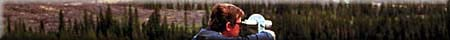
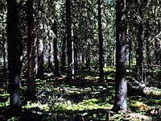
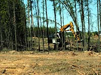
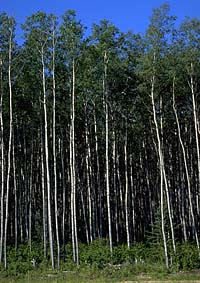
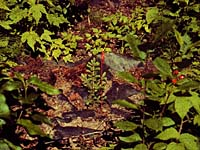
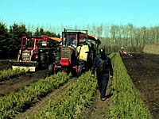
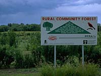

 When left to nature, a mature forest gradually declines until a natural disaster such as insect infestation, disease, windstorm or fire, ushers in a period of renewal. This natural forest regeneration is usually irregular. After natural disasters, the pockets of old trees that remain must die out before the forest canopy opens and sunlight reaches the ground to support new growth. |
 Resource managers try to recreate the life cycle of the forest. To maximize economic returns, timber harvesting takes place when the forest is in its prime, before decline begins. Risk of loss, from fire, insect and disease, is therefore minimized. |
 Forest renewal is a priority of the provincial government and the Forest Management License Agreement holders. The province's primary goal is to restore current harvested areas to productive forest growth. Naturally occurring monocultures, particularly jack pine, trembling aspen (shown left) and black spruce , will often fully regenerate on their own. Site preparation treatments, however, will also greatly enhance the survival rate of these seedlings, as well as seedlings that are planted in understocked areas previously identified by forest managers. |
 After planting, foresters monitor the new stands to determine stocking, vigor, and growth rates. Overall survival rates for plantations in Saskatchewan have improved from an average of approximately 70 percent throughout the 1970s, to over 85 percent today. In 1987, the provincial government established a planting target of 50 million trees in five years. By working together, the province and industry exceeded this target by 3 million seedlings. |
Trees are planted throughout Saskatchewan and these plantings fall into three categories, based on the history of the forest in the area.
- Afforestation
planting of trees and shrubs in an area where they were never present before the planting. - Restoration
plantings in areas that have been deforested and the forests did not regenerate or where the need is to immediately re-establish trees and shrubs. Seedlings are planted to restore the forest to the area. - Reforestation
replacement of trees that were recently lost due to cutting, fire or some other cause.
Afforestation is done for a number of reasons in Saskatchewan. Trees are planted to:
- reduce energy and snow removal costs. Shelterbelts
are rows of planted tress
that slow down winter winds so that the snow is dropped in the
shelterbelt and on surrounding land. Trapped snow melts into
much needed spring soil moisture. Reduced wind speeds help decrease
wind erosion of exposed soil. Shelterbelts planted along roadways
help to reduce wind blowing across the road, and preventing snow
blowing over in the winter.
- protect domestic crops and animals from
harsh climatic conditions.
- improve aesthetics.
- provide wildlife habitat. Planting trees
are sometimes done to provide food and shelter for various species
of wildlife.
- increase biodiversity. Increasing
habitat areas increases the types of organisms (both plant and
animal) that can live in those areas.
- reduce erosion. Planting trees may help
to stabilize slopes. The tree roots hold the soil in place, preventing
slumping (slope moves slowly down the hill from force of gravity)
and water erosion.
- reduce carbon dioxide in the atmosphere (as carbon sinks). As plants live, they undergo photosynthesis and respiration. During photosynthesis, carbon dioxide from the air is taken in, and, along with water and chemicals in the chloroplasts of the plants, carbohydrates are produced. The sun is used as the energy source for this process and oxygen is given off as a byproduct. While photosynthesis only during the day, respiration, or the breakdown of carbohydrates with the release of carbon dioxide, occurs day and night. Larger amounts of oxygen are given off through photosynthesis in the daylight than the carbon dioxide given off through respiration during night and day. When plants take more carbon dioxide out of the air than they release, they are called carbon sinks.
 Trees for use in afforestation projects are grown at the PFRA Nursery, Indian Head and the Shand Greenhouse, Estevan. These trees can be obtained for aboreal plantings on public lands and shelterbelts on farm land free of charge. |
 Why not try to identify an area close to your school or community which could be improved by planting trees and shrubs? Check out the afforestation tree planting activity…. |
Restoration is really a form of afforestation and differs only in that plantings are done in deforested areas where the forests did not regenerate and there is an immediate need to establish the trees and shrubs.

Also called regeneration, reforestation is one of the interactive steps in the forest management cycle. As a silvicultural activity, reforestation is planned even before trees are harvested. |
There are two basic methods of reforestation:
- artificial -
includes aerial or direct seeding and planting seedlings or rooted
cuttings. Seedlings are grown in nurseries, and are available
for planting as bare root (grown and removed from open field seed
beds ) or container stock (grown in greenhouses in special containers).
- natural - trees shed their own seeds and new seedling develop from these.